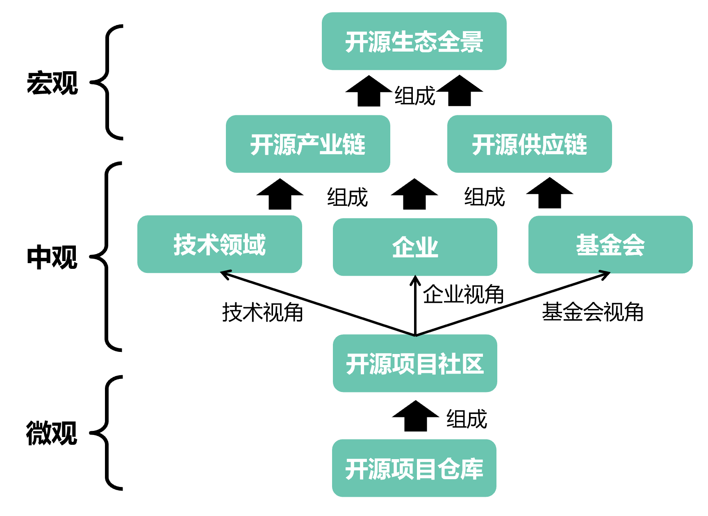
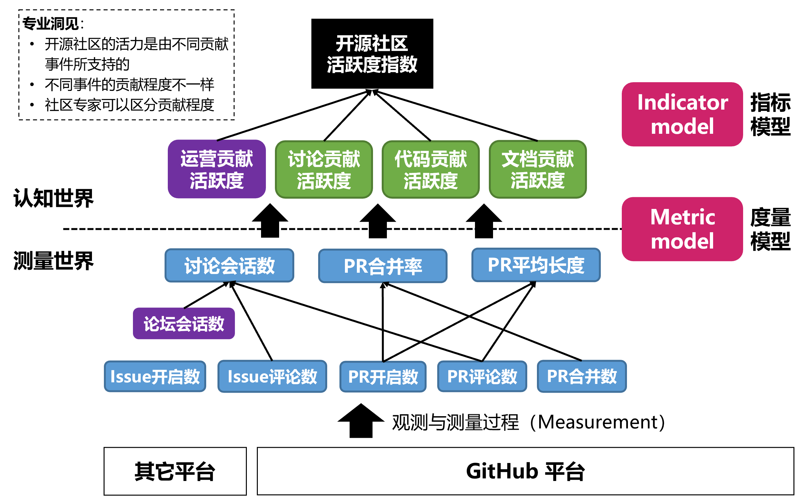
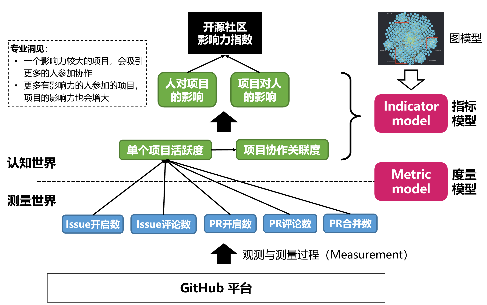
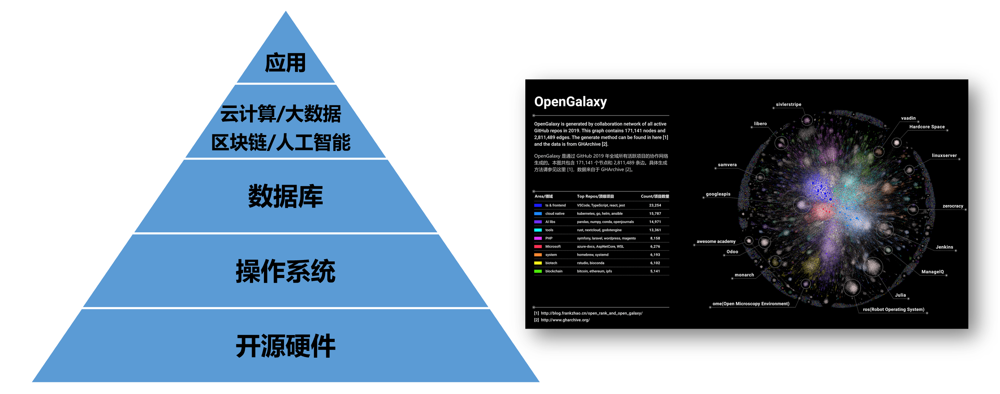
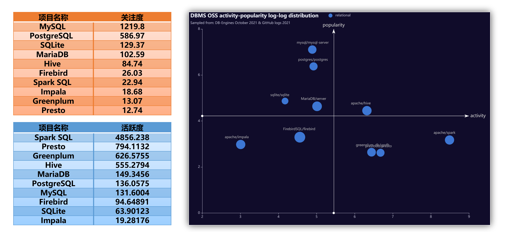
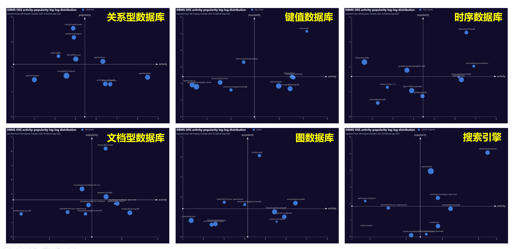
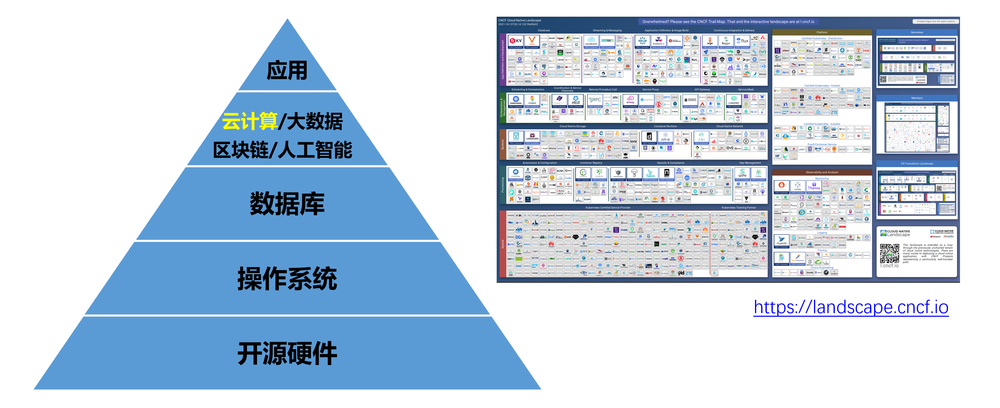
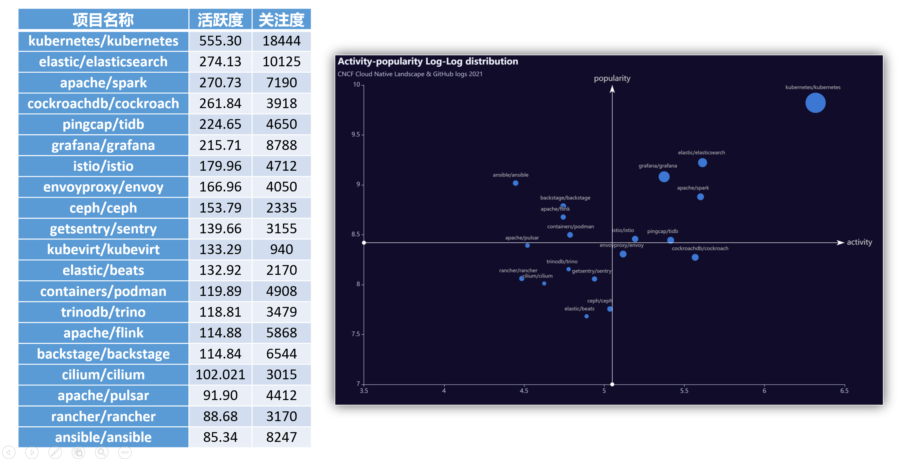
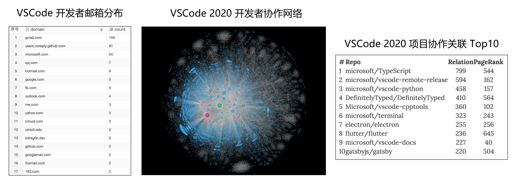

开源技术选型
开源技术使用中的问题
- 开源组件的选型
- 某一领域，如何选择活跃与健康的项目
- 开源组件的合规
- 开源项目许可证的兼容与冲突检测
- 开源代码的违规复用
- 开源供应链风险与安全
- 开源组件在供应链中的监测与预警
- 开源组件供应链的重构与优化

开源技术选型框架
- 功能满足度
- 分析业务应用的各种场景，各种业务场景的满足度如何。
- 性能满足度如何。
- 是否易于测试。
- 涉及到行业规范的，行业规范遵行度如何。
- 学习成本分析
- API参考、开发指南等资料文档是否齐全。
- 分析开源框架代码量，依赖其他的开源框架的量。优先使用轻量级的框架。
- 开源社区活跃度如何。优先使用主流的框架。
开源技术选型框架--续
- 开源风险分析
- 优先使用开源协议友好的项目
- 活跃度：使用活跃的开源项目
- 集成开发成本
- 分析集成的难易程度，优先使用入侵项目代码少的，集成方式解耦的框架。
- 基于开源框架扩展新功能的工作量分析，尽量覆盖各种开发场景。
- 相关的能力是否开放，是否方便定制。
- 维护成本
- 开源框架升级是否支持平滑升级。
- 开源框架接不同版本之间的兼容性如何。
- 日志是否丰富，是否有性能统计日志等方便在网维护。
基于数据指标的开源技术选型方法
- 开发活跃度
- 项目影响力
- 社区健康度
- 社区持续发展指数
- ……
方法：基于开源测量学的开源生态分析
- 宏观洞察：
- 开源持续升温，规模、活跃度、多样性
- 开源产业链不断完善，渗透全行业
- 开源供应链极具规模，极具战略意义
- 中观洞察：
- 技术多样性快速发展，中美对比分析
- 企业快速布局开源，企业排行与分析
- 基金会中流砥柱，旗下领域发展与分析
- 微观洞察：
- 国外开源项目排行、国内开源项目排行
- 开发者排行，机器人排行，洞察
- 深度开源案例分析
- GitHub 趋势榜每月之星

开发者行为数据是一个极好的切入点




开源生态数据类目体系

选型：开源技术的数字化洞察
开源基础软件 —— 数据库

关系型数据库

数据库领域的开源象限

开源科技的数字化洞察 —— 云原生

案例分析：VSCode
VSCode 案例分析之社区流程
- build-chat：将构建信息发送到 Slack 中
- classifier/classifier-deep：Issue 自动打标/基于机器学习
- copycat：跨仓库 Issue 拷贝
- english-please：非英文开 Issue 提示使用英文
- locker：Issue 关闭一段时间后自动锁定
- regex-labeler：根据 Issue 描述中正则匹配结果打标签
- topic-subscribe：根据 label 提醒某些账户关注当前 Issue
其他注重流程的社区：Kubernetes、React、OpenDigger 等
案例分析：TiDB 开源生态初探
- Tidb、Tikv 生态与云原生生态项目联系紧密；
- 贡献者会贯彻 upstream first 原则；
- PingCAP 具有较为完整的社区和项目生命周期管理的设计；
- 不仅有 pingcap 和 tikv 两个主要组织，还包括 pingcap-incubator 的项目孵化组织，还有 tidb-challenge-program 组织用于一些技术攻关项目的研发；
- PinCAP 高度重视自动化测试，chaos-mesh 为其自主研发的混沌工程项目；
- PingCAP 内部大量使用机器人自动化协作。

企业内部的开源使用责任矩阵
- 开源管理委员会
- 开源技术委员会
- 开源技术专项委员会：负责为某一领域的技术，制定使用规则
- 开源技术委员会
- BG
- BU
- 开源Owner：负责看护某一款开源软件的各个版本
- BU
- 版本火车Owner：负责组织一组开源软件版本，组成“火车”
- 开源Owner
- 开源Commmitter：负责开发、维护开源软件
- 开源Owner
- 其他专项工作
- 架构师：参与选型决策
- 安全工程师：参与选型决策，提供安全建议
- 法务人员：参与选型决策